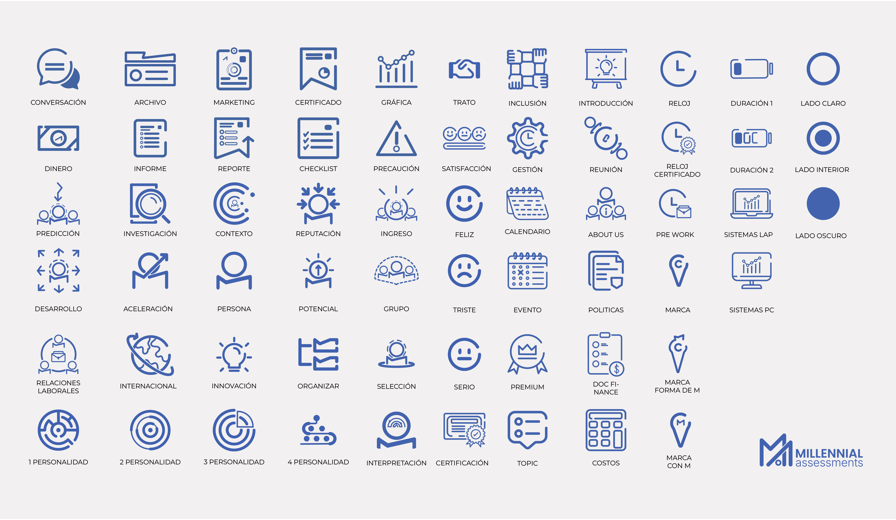
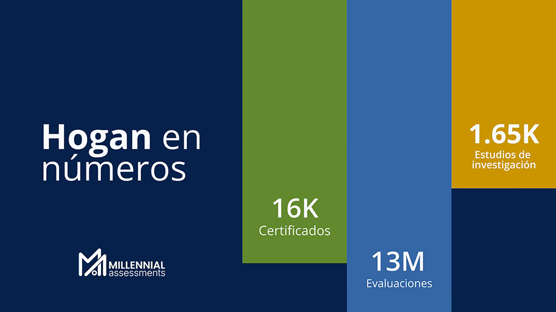
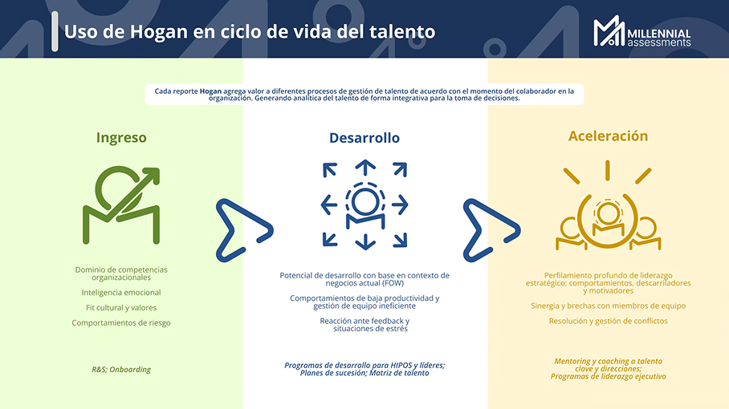
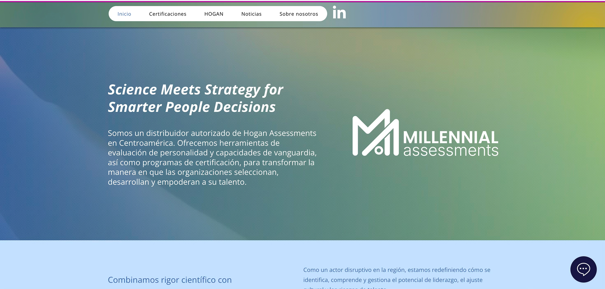
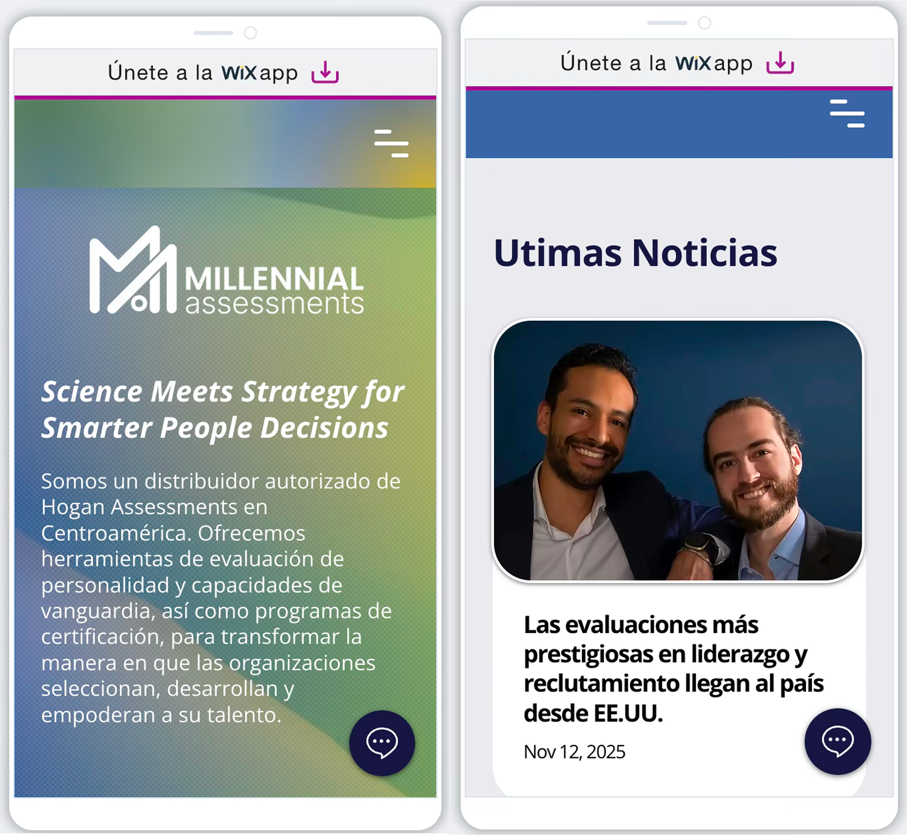

Millennial Assessments
Iconography, web design, banners, slides, and social media posts.
Consulting company specialized in talent assessment and development for organizations.
For six months, I completed my professional internship at Millennial Assessments, working for MACA. One of my main projects was developing a visual system for the brand, using its logo and color palette as the starting point.

Based on the logo, I defined the visual style of the iconography using simple shapes, curves, and rounded ends. I also established a rule of keeping the lines separated, creating a distinctive and consistent feature throughout the system.
With the visual system established, I developed various brand elements, including graphic dividers, social media templates, stationery, and presentation slides.


The visual system became a foundation for maintaining a consistent brand identity across MACA’s different platforms.

